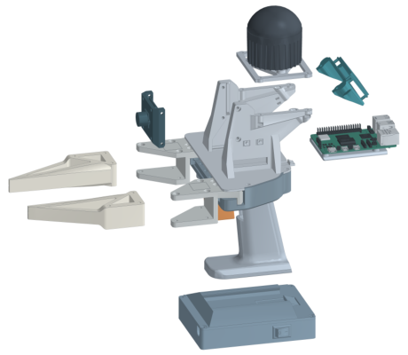
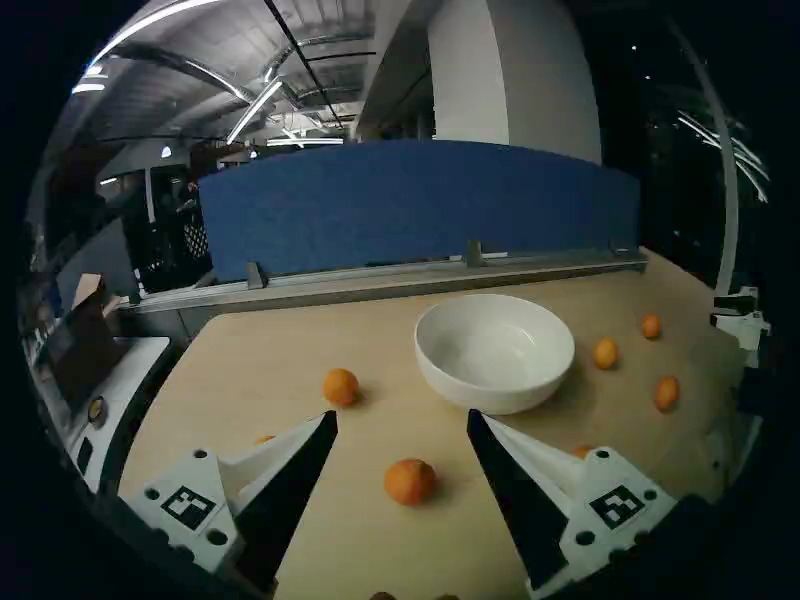

目录 · 9 节
1它到底在解决什么问题？2整套系统长什么样？3夹爪上装了什么，为什么这样装？4录完之后，服务器做了什么？5手持数据怎么用到机器人身上？6实验说明了什么？7我认为它的局限8一个机器人团队可以怎么试9结论主要用手持夹爪采的示范，采集地点和灯光都与测试现场不同，只混入少量真机遥操作，微调后的 π0.5 就在双臂把橘子放进碗的任务上 10 次全部成功，而 MolmoAct2 的发布版本不经微调是 10 次全败。这些示范来自论文开源的双臂手持采数系统 UMI-Live：相机、激光雷达、计算和电池都装进夹爪，操作员按一个键就能接着录下一段，后台同时把录好的片段重建成可训练的数据。教机器人做事，最贵的一环往往是采示范数据：遥操作要把整套机器人搬到现场；UMI（一种手持示范夹爪方案）让人手持一对夹爪直接示范，可硬件要自己搭、要标定、录像要逐条处理，门槛仍然不低。UMI-Live 的价值不在新算法，而在一套能照着复现的采数流水线，作者同时公开了约 40 小时数据。
它到底在解决什么问题？
先看一个场景（示意）。一个团队想让双臂机器人学会在不同人家里收拾桌面。用遥操作采，每去一户就要把两条机械臂、控制电脑和安全设施一起运过去，一天也跑不了几户。改用手持夹爪，人拿着两只夹爪在每户家里直接做一遍，录下腕部视频和夹爪的运动轨迹，机器人照着学。
| 采集方式（示意） | 每到一个新地点要带什么 | 录完之后还要做什么 |
|---|---|---|
| 真机遥操作 | 机械臂、控制电脑、安全设施 | 基本可以直接训练 |
| 早期手持夹爪 | 夹爪，有的还要外部追踪架或背包电脑 | 逐条重建轨迹、手工转成训练格式 |
| UMI-Live | 两只夹爪 | 后台自动处理，操作员接着录 |
手持夹爪省掉了搬机器人，但把麻烦挪到了别处。论文列了几个具体的坑：有的方案要在现场架固定的追踪设备，或者让人背着电脑；夹爪做得笨重，就很难捏起小东西；每条录像都要重建轨迹、转换格式，人工管这些步骤很快就成了瓶颈。作者的立场很直接：操作员应该录完一条就能录下一条，软件在后台把录好的数据准备好。
所以这篇的目标不是更好的策略，而是让手持采集真正可以批量做。评价它，要看两件事：数据能不能自动、可靠地变成训练集；这样的数据训出来的策略能不能在真机上工作。
整套系统长什么样？

整个流程分四段：
| 阶段 | 在哪做 | 产出 |
|---|---|---|
| 采集 | 两只手持夹爪 | 每只各自的腕部视频、激光雷达和 IMU 原始数据 |
| 处理 | 服务器，后台并行 | 每只手的 6 自由度轨迹、夹爪开口、对齐好的时间轴 |
| 入库 | 服务器 | LeRobot 格式的数据集，同步到 Hugging Face |
| 训练和部署 | 训练机 + 双臂 YAM 机器人 | 微调后的 π0.5 或 MolmoAct2，在真机上执行 |
关键分工是：夹爪只负责录，所有重建和整理都交给服务器排队做，两者不互相等待。下面拆开讲。
夹爪上装了什么，为什么这样装？
每只夹爪带一个内置 IMU（惯性测量单元，测加速度和转动）的激光雷达、一个全局快门的超广角相机和一块 Raspberry Pi 5。相机以每秒 30 帧录腕部画面。选超广角是因为系统不用顶部相机，腕部画面要尽量把工作区和周围环境都拍进来。
为什么要激光雷达？夹爪在空间里怎么动，得有东西测出来。原版 UMI 用相机加 IMU 估计轨迹，另一些方案用外部追踪设备。UMI-Live 让每只夹爪用自己的激光雷达和 IMU 做 SLAM，也就是一边走一边重建周围环境、同时算出自己在哪。这样现场不用架任何设备，也不用针对每个环境做标定。
夹爪开口怎么测？活动的指座上贴了两个 ArUco 码（一种印刷的黑白方块标记，相机能识别它的位置）。手指张开时两个码在画面里离得远，合拢时离得近。服务器根据两个码在鱼眼画面里的夹角和固定的相机几何算出实际宽度，再按标定好的全闭、全开位置映射到 0 到 1 之间。
手指也重新设计了：硬塑料底座负责受力，外面一层薄的软胶贴合物体形状，方便捏螺丝这类小东西。同一款手指也装在 YAM（i2RT 公司的一款轻量机械臂，论文用两条做真机测试）上，所以人示范时用的手指和机器人执行时用的是同一种。
这些集成是有代价的。论文表 1 给出：每只带电池 1.42 kg，一次充电用 1.5 小时，一对的硬件成本 1,930 美元。
录完之后，服务器做了什么？
操作员用一个按钮同时启停两只夹爪，屏幕上显示录制和上传状态。录好的片段自动传到服务器，进入处理队列。
第一步是查同步。两只夹爪是两台独立设备，时间对不齐，双手动作就会错位。录制时，两台 Pi 用 Chrony（一个网络对时工具）把时钟对齐；每个雷达和它所连的 Pi 之间，再用 gPTP（一种局域网里的精确对时协议）对时。服务器先检查这些同步记录，估计出的两台设备时间偏差超过 5 毫秒的片段直接丢掉。举个例子：双手交接一个橘子时，手每秒移动约 0.5 米（示意），差 5 毫秒就是 2.5 毫米的错位，再大就会影响抓取。
第二步是算轨迹。服务器对两只夹爪各自独立跑一遍激光雷达加 IMU 的 SLAM，得到夹爪在空间里的运动，再加一个固定偏移，换算到两指尖中心点的轨迹。这个点在论文里叫 TCP，机器人执行时要控制的就是它。
第三步是对齐和入库。以一路相机的帧为时间轴，把位姿和开口插值到每一帧上。每只手的位置都相对它在本条示范开头的位置来记，每只手 7 个数（位置、旋转、开口），两只手合起来 14 个。检查无误后存成 LeRobot 格式，同步到 Hugging Face。
这些步骤按依赖关系并行执行：解码、SLAM、开口估计只要输入齐了就同时跑，图 6 里最多 5 个任务并发；只有写数据集这一步排队串行。处理中断了，也能从已完成的阶段接着跑。
手持数据怎么用到机器人身上？
人拿着夹爪，和机器人举着夹爪，绝对位置完全不同：人可能站在客厅，机器人固定在实验台上。直接拿绝对坐标训练，两边的数据对不上。
UMI-Live 的办法是让策略只预测相对运动。策略的输入是两路腕部画面、两只夹爪的开口和一句任务指令，不输入位姿和关节角。输出是一个动作块：未来 24 步（每秒 30 步）里，每只手相对当前时刻要怎么移动、怎么转，以及每一步夹爪开多大。机器人执行时，把这些相对运动叠加到自己当前的指尖位姿上，再用逆运动学换算成关节命令。
用一个小例子说明（示意）：策略说未来第 10 步左手要往前 3 厘米。人的数据里，这是相对人手当时位置的 3 厘米；机器人执行时，就是相对机械臂当前位置往前 3 厘米。两边描述的是同一件事。遥操作数据用正运动学从关节角算出指尖位姿，再按同样方式转换，所以两种来源可以直接混在一起训练。 Hoot 说

只减位置
- 左手地图
- 沿地图 x 轴 3 厘米
- 右手地图
- 沿地图 y 轴 3 厘米
- 问题
- 同一个动作，两种读数
按指尖朝向转回
- 左手
- 沿指尖向前 3 厘米
- 右手
- 沿指尖向前 3 厘米
- 结果
- 和地图朝向无关
机器人执行
- 起点
- 关节角算出的当前指尖位姿
- 目标
- 沿自己指尖向前 3 厘米
- 再换算
- 逆运动学得到关节命令
示意：人手沿夹爪朝前移动 3 厘米。左栏是两只夹爪各自 SLAM 地图里的位置差，地图朝向不同，读数就不同；中栏按当前指尖朝向转回后，两边读数一致；右栏是机器人把这个相对动作接在自己当前指尖位姿上。 出处: 论文附录 F：未来位姿相对当前位姿表达，位移先减当前位置再乘当前旋转的转置；附录 G：机器人目标位姿 = 当前指尖位姿 × 预测的相对位姿
还有一个容易漏掉的问题：两只夹爪各自跑 SLAM，各有一套自己的坐标轴，「往前」在两套坐标里方向不一样，和机械臂底座的坐标也不一样。论文的处理是，把未来每一步的位移和转动都换算到「当前时刻夹爪指尖自己的坐标轴」里来表达，也就是先减去当前位置，再按当前朝向转回来。这样「往前 3 厘米」指的是沿着夹爪自己朝前的方向，不依赖 SLAM 建出来的地图朝哪边。机器人那边，作者给 YAM 机械臂设了一个固定的法兰到指尖的变换，让机器人指尖坐标轴的朝向和 UMI 夹爪的约定一致；执行时用当前关节角算出指尖位姿，再把预测的相对运动接在它后面。所以从示范到上线，参考系始终是「此刻的指尖」，中间不需要知道 SLAM 地图和机器人底座之间的关系。
实验说明了什么？
任务是双臂把桌上 6 个橘子全部放进碗里，橘子和碗的位置每次随机，6 个都进碗才算成功，允许重抓和捡回掉落的橘子。每种条件试 10 次。训练池有 296 条手持示范和 75 条在测试现场采的真机遥操作示范。手持示范在另一个地点、另一种灯光下录。

| 策略 | 训练方式 | 手持与遥操作数据占比 | 成功次数 |
|---|---|---|---|
| MolmoAct2 | 发布版本，不微调 | — | 0/10 |
| π0.5 | 微调 | 95% / 5% | 9/10 |
| π0.5 | 微调 | 90% / 10% | 10/10 |
| MolmoAct2 | 微调 | 75% / 25% | 8/10 |
这张表说明，以手持数据为主的混合数据确实能训出在真机上完成整套任务的策略。表里的占比，是论文所说的两种来源在微调数据混合中各占的份额，两者加起来是 100%；它是从上面那 296 条手持示范和 75 条遥操作示范里混出来的，不是另外多采了数据。π0.5 在真机数据只占 5% 份额时，10 次里成功了 9 次。MolmoAct2 的发布版本已经针对这种双臂 YAM 机器人训练过，却一次都没成功，微调后升到 8 次，说明这套数据补上了发布模型缺的任务能力。
但手持数据单独能贡献多少，这组实验回答不了。作者自己写明，没有只用手持数据、也没有只用遥操作数据的对照。那 5% 到 25% 的现场数据，可能正是策略适应新环境的关键。
我认为它的局限
第一，证据只覆盖一个任务。作者明确说评测只有放橘子一个任务、每种条件 10 次、每种条件一个训练种子。10 次里成功 9 次和 10 次，差别在统计上分不开，公开数据里的倒水和叠毛巾两个任务也没有做真机评测。
第二，最关键的对照缺失。作者承认没有纯手持数据和纯遥操作数据的比较，无法分开两种来源各自的作用。75 条遥操作示范本身能不能做成这个任务，表里看不出来。
第三，采集体验还没量化。每只 1.42 kg、一次充电 1.5 小时，长时间单手举着并不轻松。作者也承认，激光雷达重建的质量取决于场景几何和运动方式；按激光雷达 SLAM 的一般经验，空旷或重复结构多的环境更容易重建不好。论文的评测集中在真机成功率上，要判断能不能规模化采集，轨迹精度、处理速度和操作员效率还得自己测。
一个机器人团队可以怎么试
第一步，先复现一对夹爪，录几十条自己任务的示范，只看处理流水线：有多少片段因同步问题被丢掉，重建出的轨迹画出来是否平滑。这一步便宜，也最能暴露激光雷达在你的环境里能不能稳定重建。
第二步，补上论文缺的对照：同一个任务，分别用纯手持、纯遥操作、混合数据训练，各测几十次。只有这样才知道手持数据省下了多少真机采集。
第三步，有效再扩到多个地点批量采，记录每小时能采多少条有效示范，和遥操作的成本比一比。
结论
采数据的瓶颈不只在硬件，录完之后的整理同样决定能采多少，UMI-Live 把这两段都做成了可复现的工程。
| 维度 | 评价 |
|---|---|
| 问题重要性 | 高。真机数据贵是机器人学习的主要瓶颈之一 |
| 方法创新性 | 中。各个部件都有先例，贡献在集成和开源 |
| 实验证据 | 偏弱。只有一个任务、每种条件 10 次，没有纯手持对照 |
| 工程成本 | 中。一对约 1,930 美元，软硬件和组装指南全开源 |
| 是否值得尝试 | 值得。要自建手持采集的团队，可以直接拿它当起点 |
读完这篇，你觉得
夜读鸮记下了，谢谢你的反馈。
点一下即可，无需登录；再点一次撤回。只统计匿名次数，不记录你是谁。
讨论
欢迎补充实验细节、复现经验或不同看法。需 GitHub 登录。
正在加载讨论…